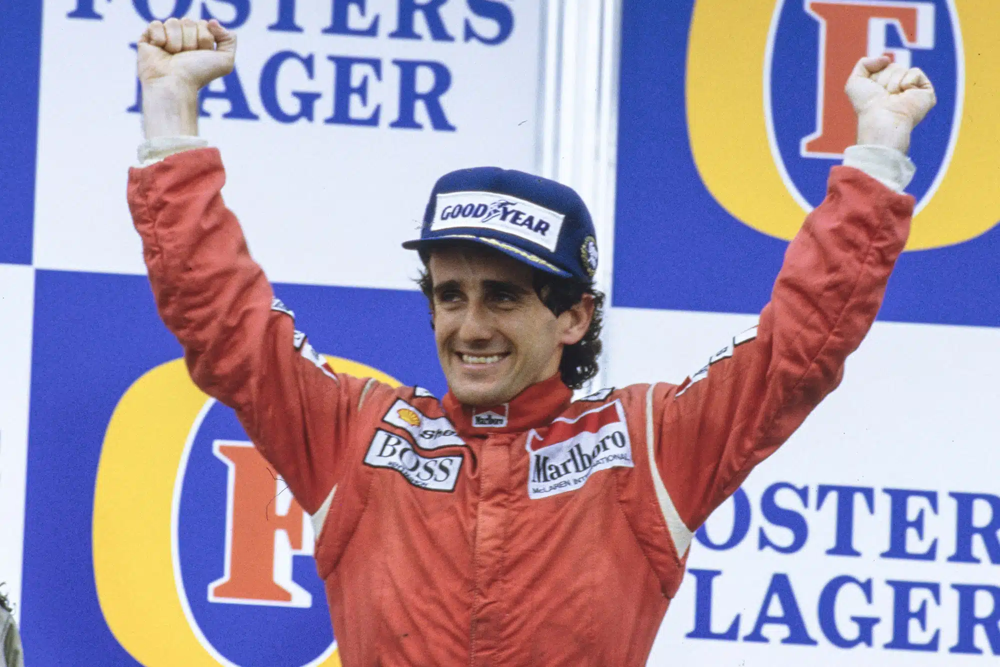

Formula 1
Prost, 1985, 1986, 1989 ve 1993 yıllarında dünya şampiyonu oldu. Toplamda 199 F1 Grand Prix yarışına katılan Prost, 51 yarış galibiyeti, 798,5 şampiyona puanı kazandı. Aynı zamanda 41 en hızlı tur zamanına imza attı.
Renault
Kariyerinin ilk F1 Grand Prix birinciliğini 1981 yılında Dijon' da düzenlenen Fransa Grand Prix' nde yine bir Fransız takımı olan Renault ile kazandı.Renault ile geçirdiği üç tam sezonunda 8 galibiyet daha kazanan Prost, takım içerisindeki anlaşmazlıklar nedeniyle McLaren' e geçti.McLaren
Takım ile geçirdiği 6 sezonda 30 F1 Grand Prix birinciliği ve 3 dünya şampiyonluğu kazandı. 1987 yılında 28. F1 Grand Prix galibiyetini kazanarak Jackie Stewart' ın rekorunu kırdı.
Scuderia Ferrari
1990 yılında takımla 5 yarış kazanarak yine şampiyonluğa aday oldu. Sezonun son yarışı Suzuka' da düzenlenen Japonya Grand Prix'inde yarışa başlangıç pozisyonunda Ayrton Senna vardı. Yarış başladığında Prost'un aracını Senna'nın aracının üzerine sürmesi sonucunda ikisi de yarış dışı kaldı. Senna yarıştan önceki puan avantajı sayesinde son dünya şampiyonluğunu elde etti. 1991 yılında Ferrari ile olan anlaşmazlıklarını halka açık bir şekilde dile getirmesi nedeniyle takım tarafından kovuldu.
Williams F1
1992 yılını yarışmadan geçiren Prost, 1993' te Williams takımına geçerek son dünya şampiyonluğunu kazandı. Aynı yıl emekliliğini açıklayarak sporu bıraktı. Alain Prost, Formula 1 tarihine en çok yarış ve puan kazanan pilot olarak geçti. Bu rekorlar daha sonra Michael Schumacher ve daha da sonra Lewis Hamilton tarafından kırıldı.
Prost Grand Prix
1997 yılında Ligier F1 takımını satın alarak adını Prost Grand Prix olarak değiştirdi. Ancak pistte gösterdiği başarıyı bir iş insanı olarak gösteremedi ve 2002 yılında takımını satarak Formula 1' den tamamen ayrıldı.Kişisel
Alain Prost kariyeri boyunca çeşitli lakaplar ile anıldı: "Profesör", "Hesap Makinesi", "Rio Kralı" (Rio De Jenerio' da yapılan Brezilya Grand Prix'ini 5 kez kazandığı için) ve "Hızlı Çocuğu" (Niki Lauda tarafından söylenmişti)
